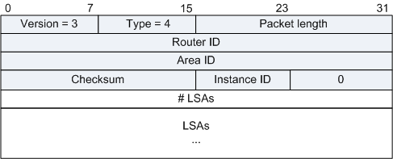
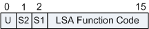
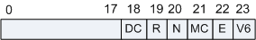
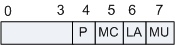

用来向对端Router发送其所需要的LSA或者泛洪自己更新的LSA，内容是多条LSA（全部内容）的集合。LSU报文（Link State Update Packet）在支持组播和广播的链路上是以组播形式将LSA泛洪出去。为了实现Flooding的可靠性传输，需要LSAck报文对其进行确认。对没有收到确认报文的LSA进行重传，重传的LSA是直接发送到邻居的。

| 字段 | 长度 | 含义 |
|---|---|---|
| # LSAs | 32比特 | LSA的数量。 |
OSPFv3常用的LSA共有7种，分别为：
| 字段 | 长度 | 含义 |
|---|---|---|
| LS age | 16比特 | LSA产生后所经过的时间，以秒为单位。无论LSA是在链路上传送，还是保存在LSDB中，其值都会在不停的增长。 |
| LS type | 16比特 | LSA的类型，标识了LSA的功能。该字段的高3位标识LSA的通用属性，剩下的比特位标识LSA的特定功能。LS Type字段的格式如下： 图2 LS Type字段格式
 U比特位标识标识对未知LSA的处理方法：
S1和S2比特位标识了LSA的泛洪范围：
LSA的功能代码定义如下：
|
| Link State ID | 32比特 | 与LSA中的LS Type和LSA description一起在路由域中描述一个LSA。 |
| Advertising Router | 32比特 | 产生此LSA的路由器的Router ID。 |
| LS sequence number | 32比特 | LSA的序列号。其他路由器根据这个值可以判断哪个LSA是最新的。 |
| LS checksum | 16比特 | 除了LS age外其它各域的校验和。 |
| length | 16比特 | LSA的总长度，包括LSA Header，以字节为单位。 |
Router-LSA（Type1）：每个路由器都会产生，描述了路由器的链路状态和花费，在所属的区域内传播。
| 字段 | 长度 | 含义 |
|---|---|---|
| Link State ID | 32比特 | 生成LSA的Router ID。 |
| W | 1比特 | 如果置1，标识该路由器是个组播“通吃者”（wild-card receiver）。当运行MOSPF时，无论目的地址是什么，这些路由器接收所有的组播数据。 |
| V (Virtual Link) | 1比特 | 如果产生此LSA的路由器是虚连接的端点，则置为1。 |
| E (External) | 1比特 | 如果产生此LSA的路由器是ASBR，则置为1。 |
| B (Border) | 1比特 | 如果产生此LSA的路由器是ABR，则置为1。 |
| Options | 24比特 | Options字段使OSPF路由器能支持可选的能力，并且与其它路由器互相通告其能力。通过这种机制，具有不同能力的路由器可以在一个OSPF路由域中混合工作。其格式为： 图4 Options字段格式

所有未定义的位都应该清零。 |
| Type | 8比特 | 链路的类型:
|
| metric | 16比特 | 流量出接口的开销值。 |
| Interface ID | 32比特 | 接口ID。 |
| Neighbor Interface ID | 32比特 | 邻居的接口ID。 |
| Neighbor Router ID | 32比特 | 邻居的路由器ID。 |
Network-LSA（Type2）：由广播网或NBMA网络中的DR产生，Network-LSA中记录了这一网络上所有路由器的Router ID，描述本网段的链路状态，在所属的区域内传播。
| 字段 | 长度 | 含义 |
|---|---|---|
| Options | 24比特 | 参见Router-LSA的字段解释。 |
| Attached Router | 32比特 | 连接在同一个网络上的所有路由器的Router ID，也包括DR的Router ID。 |
IPv6的这些LSA与IPv4的OSPFv2中的type 3 summary-LSAs等同。由区域边界路由器始发，这些LSA描述了到其他区域的IPv6地址前缀。每个IPv6地址前缀单独发一个Inter-Area-Prefix-LSA。
| 字段 | 长度 | 描述 |
|---|---|---|
| metric | 24 bits | 到目的地址的开销值。 |
| PrefixLength | 8 bits | 前缀的比特数。 |
| PrefixOptions | 8 bits | 用来表达这个前缀的一些特性，以便在各种不同的路由计算时做相应的判断和处理。例如希望在特定情况下忽略一个前缀的计算。 由LSA公告的每个前缀都拥有一个自己的PrefixOptions字段。PrefixOptions字段格式如下： 图7 PrefixOptions字段格式

|
| Address Prefix | 变长 | IPv6地址前缀。 |
缺省路由的前缀长度为0。
IPv6的这些LSA与IPv4的OSPFv2中的Type 4 summary-LSAs等同。由区域边界路由器始发，这些LSA描述了到其他区域的IPv6地址前缀。每个LSA描述了到某台路由器的一条路由。
| Field | Length | Description |
|---|---|---|
| Options | 24比特 | Options字段描述的不是源路由器的能力，而是目的路由器所支持的能力，所以此字段值应该等于目的路由器的router-LSA的Options字段值。 |
| metric | 24比特 | 到目的地址的开销值。 |
| Destination Router ID | 32比特 | LSA中描述的目的路由器的Router ID。 |
每个AS-external-LSA描述到达自治系统外部的一个前缀的路径。
| 字段 | 长度 | 含义 |
|---|---|---|
| E | 1比特 | 外部路由的Metric类型。如果设置为1，表示此为2类外部路由，其Metric不随着路由的传递而增长。如果设置为0，表示此为1类外部路由，其Metric随着路由的传递而增长。 |
| F | 1比特 | 如果设置为1，则表示后面的Forwarding Address可选字段存在。 |
| T | 1比特 | 如果设置为1，则表示后面的External Route Tag可选字段存在。 |
| metric | 24比特 | 到目的地址的路由开销。 |
| PrefixLength | 8比特 | 前缀的比特数。 |
| PrefixOptions | 8比特 | 用来表达这个前缀的一些特性，以便在各种不同的路由计算时做相应的判断和处理。例如希望在特定情况下忽略一个前缀的计算。 由LSA公告的每个前缀都拥有一个自己的PrefixOptions字段。PrefixOptions字段格式如下： 图10 PrefixOptions字段格式
|
| Referenced LS type | 16比特 | 表明这个LSA是参考一个Router-LSA，还是一个Network-LSA。1表示参考一个router-LSA，2表示参考一个Network-LSA。 |
| Address Prefix | 变长 | IPv6地址前缀。 |
| Forwarding Address | 32比特 | 可选的128位Pv6地址。当前面的F位为1时存在。表示到达目的的数据应该转发到这个地址。在公告路由器不是最优的下一跳的时候可以使用。 |
| External Route Tag | 32比特 | 可选的标记位。可以用于ASBR之间的通信。一个比较常见的例子是，在OSPF自治系统的两个边界路由器上进行路由分发时，通过对引入的路由进行标记，可以很方便地进行路由过滤。 |
| Referenced Link State ID | 32比特 | 当设置了前面的Reference LS Type时存在。如果存在，说明此条外部路由有一些相关信息需要参考另外一个LSA。 |
每个连接的链路产生一个Link-LSA。
作用：
| Field | Length | Description |
|---|---|---|
| Rtr Pri | 8 bits | 该路由器在该链路上的优先级(Router Priority)。 |
| Options | 24bits | 提供给Network LSA的Options。 |
| Link-local Interface Address | 128 bits | 路由器与该链路相连的接口上配置的Link Local地址(Link Local地址只出现在Link LSA中)。 |
| # prefixes | 32 bits | 该LSA中携带了多少IPv6地址Prefix。 |
| PrefixLength | 8 bits | 前缀的比特数。 |
| PrefixOptions | 8 bits | 用来表达这个前缀的一些特性，以便在各种不同的路由计算时做相应的判断和处理。例如希望在特定情况下忽略一个前缀的计算。 由LSA公告的每个前缀都拥有一个自己的PrefixOptions字段。PrefixOptions字段格式如下： 图12 PrefixOptions字段格式
|
| Address Prefix | Variable | IPv6地址前缀。 |
Intra-Area-Prefix-LSA携带区域内IPv6 Prefix信息。
| 字段 | 长度 | 描述 |
|---|---|---|
| # prefixes | 16 bits | 在LSA中包含的IPv6前缀数量。必要的话，可以通过多个intra-area-prefix-LSA来携带前缀，这样可以控制LSA的长度。 |
| Referenced LS type | 16 bits | 表明这个LSA是参考一个Router-LSA，还是一个Network-LSA。1表示参考一个router-LSA，2表示参考一个Network-LSA。 |
| Referenced Link State ID | 32 bits | 当这个LSA是参考一个Router-LSA时，设置为0。当这个LSA是参考一个Network-LSA时，设置为该链路的DR的Interface ID。 |
| Referenced Advertising Router | 32 bits | 当这个LSA是参考一个Router-LSA时，设置为这个路由器的Router ID。当这个LSA是参考一个Network-LSA时，设置为该链路的DR的Router ID。 |
| PrefixLength | 8 bits | 前缀的比特数。 |
| PrefixOptions | 8 bits | 用来表达这个前缀的一些特性，以便在各种不同的路由计算时做相应的判断和处理。例如希望在特定情况下忽略一个前缀的计算。 由LSA公告的每个前缀都拥有一个自己的PrefixOptions字段。PrefixOptions字段格式如下： 图14 PrefixOptions字段格式
|
| Metric | 16 bits | 前缀开销值。与Router-LSA的接口开销值相同单位。 |
| Address Prefix | Variable | IPv6地址前缀。 |
| 标准 | 描述 |
|---|---|
| RFC 2740 | OSPF for IPv6 |